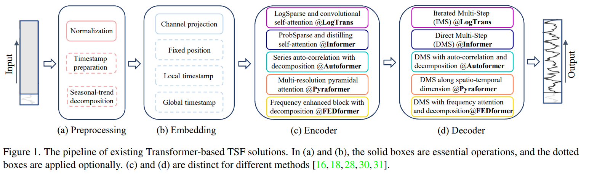
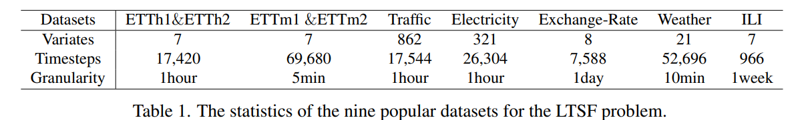
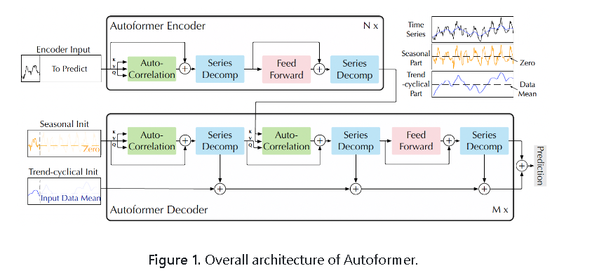
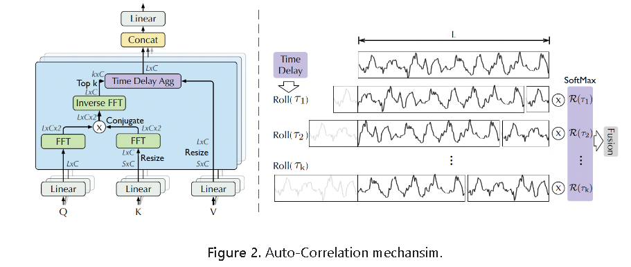
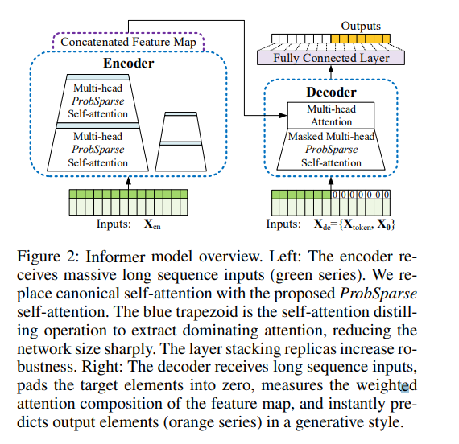
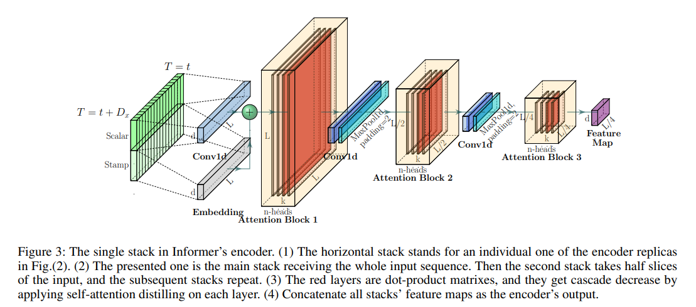
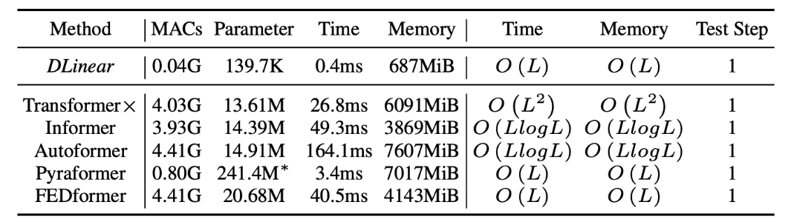
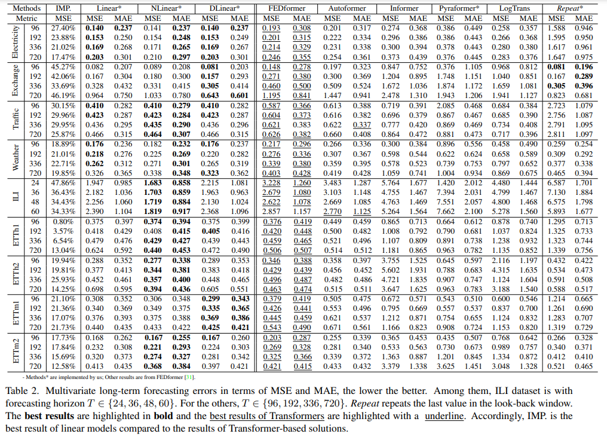

<!DOCTYPE html>


  <html lang="en">
    

    <head>
      <meta charset="utf-8" />
        
      <meta
        name="viewport"
        content="width=device-width, initial-scale=1, maximum-scale=1"
      />
      <title>DLinear-Are Transformers Effective for Time Forecasting |  小熊的小站</title>
  <meta name="generator" content="hexo-theme-ayer">
      
      <link rel="shortcut icon" href="/favicon.ico" />
       
<link rel="stylesheet" href="/dist/main.css">

      
<link rel="stylesheet" href="/css/fonts/remixicon.css">

      
<link rel="stylesheet" href="/css/custom.css">
 
      <script src="https://cdn.staticfile.org/pace/1.2.4/pace.min.js"></script>
       

<script type="text/javascript">
(function(i,s,o,g,r,a,m){i['GoogleAnalyticsObject']=r;i[r]=i[r]||function(){
(i[r].q=i[r].q||[]).push(arguments)},i[r].l=1*new Date();a=s.createElement(o),
m=s.getElementsByTagName(o)[0];a.async=1;a.src=g;m.parentNode.insertBefore(a,m)
})(window,document,'script','//www.google-analytics.com/analytics.js','ga');

ga('create', 'UA-228563528-1', 'auto');
ga('send', 'pageview');

</script>


 
<script>
var _hmt = _hmt || [];
(function() {
	var hm = document.createElement("script");
	hm.src = "https://hm.baidu.com/hm.js?71ee62302f36ca8f840077a641705255";
	var s = document.getElementsByTagName("script")[0]; 
	s.parentNode.insertBefore(hm, s);
})();
</script>


      <link
        rel="stylesheet"
        href="https://cdn.jsdelivr.net/npm/@sweetalert2/theme-bulma@5.0.1/bulma.min.css"
      />
      <script src="https://cdn.jsdelivr.net/npm/sweetalert2@11.0.19/dist/sweetalert2.min.js"></script>

      <!-- mermaid -->
      
      <style>
        .swal2-styled.swal2-confirm {
          font-size: 1.6rem;
        }
      </style>
    </head>
  </html>
</html>


<body>
  <div id="app">
    
      
    <main class="content on">
      <section class="outer">
  <article
  id="post-20240214"
  class="article article-type-post"
  itemscope
  itemprop="blogPost"
  data-scroll-reveal
>
  <div class="article-inner">
    
    <header class="article-header">
       
<h1 class="article-title sea-center" style="border-left:0" itemprop="name">
  DLinear-Are Transformers Effective for Time Forecasting
</h1>
 

      
    </header>
     
    <div class="article-meta">
      <a href="/2024/20240214/" class="article-date">
  <time datetime="2024-02-14T13:11:34.000Z" itemprop="datePublished">2024-02-14</time>
</a>   
<div class="word_count">
    <span class="post-time">
        <span class="post-meta-item-icon">
            <i class="ri-quill-pen-line"></i>
            <span class="post-meta-item-text"> Word count:</span>
            <span class="post-count">1.1k</span>
        </span>
    </span>

    <span class="post-time">
        &nbsp; | &nbsp;
        <span class="post-meta-item-icon">
            <i class="ri-book-open-line"></i>
            <span class="post-meta-item-text"> Reading time≈</span>
            <span class="post-count">4 min</span>
        </span>
    </span>
</div>
 
    </div>
      
    <div class="tocbot"></div>


  
    <div class="article-entry" itemprop="articleBody">
       
  <link rel="stylesheet" type="text&#x2F;css" href="https://cdn.jsdelivr.net/npm/hexo-tag-hint@0.3.1/dist/hexo-tag-hint.min.css"><p>这篇论文使用一个简单的线性层模型超过了众多Transformer系列复杂模型。不仅让人疑问：时序预测中Transformer的发展是否真的有效？</p>
<p><a target="_blank" rel="noopener" href="https://github.com/cure-lab/LTSF-Linear">源代码</a>。出自AAAI 2023</p>
<span id="more"></span>

<h2 id="时间序列问题"><a href="#时间序列问题" class="headerlink" title="时间序列问题"></a>时间序列问题</h2><p>对于历史数据L的序列，我们可以往后预测T个未来时间序列长度。</p>
<p>当T&gt;1时，可以通过迭代单步预测来获得多步预测，也可以直接优化多步预测目标，前者称为iterated multi-step (IMS) forecasting，后者称为direct multi-step (DMS) forecasting。IMS会受到误差累积的影响。</p>
<h2 id="Transformer的-有效性"><a href="#Transformer的-有效性" class="headerlink" title="Transformer的 有效性"></a>Transformer的 有效性</h2><p>Transformer的主要工作动力来自于它的多头自注意机制，它具有显著的提取长序列元素之间语义相关性的能力(例如，文本中的单词或图像中的二维补丁)。然而，自我注意在一定程度上具有排列不变性和“反序性”。虽然使用各种类型的位置编码技术可以保留一些有序信息，但在其上加上自注意后，仍然不可避免地存在时间信息丢失。对于语义丰富的应用程序，如自然语言中，这通常不是一个严重的问题。例如，即使我们重新排序其中的一些单词，句子的语义也会在很大程度上保留下来。然而，在分析时间序列数据时，通常数值数据本身缺乏语义，我们主要感兴趣的是对连续点之间的时间变化进行建模。也就是说，顺序本身起着最关键的作用。因此，我们提出了以下有趣的问题:变形金刚对长期时间序列预测真的有效吗?</p>
<h2 id="基于Transformer的长时间序列预测方法"><a href="#基于Transformer的长时间序列预测方法" class="headerlink" title="基于Transformer的长时间序列预测方法"></a>基于Transformer的长时间序列预测方法</h2><p></p>
<h2 id="DLinear模型"><a href="#DLinear模型" class="headerlink" title="DLinear模型"></a>DLinear模型</h2><p>DLinear模型首先将历史时间序列数据分解为趋势(Trend)数据$X_t\in \mathbb{R}^{L\times C}$ 和剩余(Remainder)数据$X_s=X-X_t$两部分，然后对分解得到的两个序列分别应用单层线性网络：</p>
<p>$$<br>H_s=W_sX_s\in\mathbb{R}^{T\times C},W_s\in \mathbb{R}^{T\times L}\<br>H_t=W_tX_t\in\mathbb{R}^{T\times C},W_t\in \mathbb{R}^{T\times L}<br>$$</p>
<p>最终的输出为，两个单层线性网络的输出结果相加：$\hat{X}=H_s+H_t$</p>
<p>另外，如果数据集的变量具有不同的特征，即不同的季节性和趋势，那么在不同变量之间共享权重可能表现不好。所以，文章设计了两种DLinear：</p>
<p>DLinear-S：每个变量共享相同的线性层；<br>DLinear-I：每个变量拥有独立的线性层。</p>
<h2 id="模型代码"><a href="#模型代码" class="headerlink" title="模型代码"></a>模型代码</h2><p>占位</p>
<h2 id="实验结果"><a href="#实验结果" class="headerlink" title="实验结果"></a>实验结果</h2><h3 id="数据集设置"><a href="#数据集设置" class="headerlink" title="数据集设置"></a>数据集设置</h3><p>使用的数据集涉及交通、电力、天气、汇率等多个领域，均为多元时间序列。</p>
<p></p>
<p>Mean Squared Error (MSE) 和 Mean Absolute Error (MAE)</p>
<h3 id="对比模型"><a href="#对比模型" class="headerlink" title="对比模型"></a><strong>对比模型</strong></h3><p>六种Transformer-based方法： </p>
<p>（1）FEDformer（阿里达摩院出品，ICML 2022）</p>
<p>（2）Autoformer（NIPS 2021）</p>
<p></p>
<p></p>
<p>（3）Informer（AAAI 2021 Best Paper）</p>
<p></p>
<p></p>
<p>（4）Pyraformer（ICLR 2022）</p>
<p>（5）LogTrans（NIPS 2019）</p>
<p>（6）Reformer（ ICLR 2020）</p>
<p>朴素的DMS方法：Closest Repeat (Repeat-C)。即 repeats the last value in the look-back window</p>
<p></p>
<h3 id="结果"><a href="#结果" class="headerlink" title="结果"></a>结果</h3><p><br>最好的结果用粗体突出显示，transformer的最好结果用下划线突出显示。因此，与基于transformers的模型的结果相比，线性模型的结果是最好的。</p>
<p>现有的基于Transformer的TSF方法对于时间关系提取并不是很有效，DLinear是长期预测任务的强大基线。 FEDformer实现了相对较高的预测精度，可能是因为FEDformer不太依赖Transformer中的自注意力机制，相反，它采用了经典的时间序列分析技术，如傅里叶变换，这在时间特征提取中起着重要作用。</p>
<h2 id="相关评价"><a href="#相关评价" class="headerlink" title="相关评价"></a>相关评价</h2><p><strong>知乎用户brightnova</strong>：我在自己的数据集上亲测，这篇论文的DLinear方法效果远远不如informer算法效果。</p>
<p><strong>知乎用户蛋壳儿</strong>回复以上：算法和数据 是息息相关的，他这个算法 在周期性强的数据集上有很好的效果，和Autoformer一样.<br>Informer关注突变的关键数据，仔细看看注意力机制就知道了。</p>
<p><strong>知乎用户stupidboys</strong>：我们的论文发现了在时间序列上正确使用transformer的方式，效果超越DLinear和其他formers，欢迎指正：A Time Series is Worth 64 Words: Long-term Forecasting with Transformers</p>
 
      <!-- reward -->
      
    </div>
    

    <!-- copyright -->
    
    <footer class="article-footer">
       
<div class="share-btn">
      <span class="share-sns share-outer">
        <i class="ri-share-forward-line"></i>
        分享
      </span>
      <div class="share-wrap">
        <i class="arrow"></i>
        <div class="share-icons">
          
          <a class="weibo share-sns" href="javascript:;" data-type="weibo">
            <i class="ri-weibo-fill"></i>
          </a>
          <a class="weixin share-sns wxFab" href="javascript:;" data-type="weixin">
            <i class="ri-wechat-fill"></i>
          </a>
          <a class="qq share-sns" href="javascript:;" data-type="qq">
            <i class="ri-qq-fill"></i>
          </a>
          <a class="douban share-sns" href="javascript:;" data-type="douban">
            <i class="ri-douban-line"></i>
          </a>
          <!-- <a class="qzone share-sns" href="javascript:;" data-type="qzone">
            <i class="icon icon-qzone"></i>
          </a> -->
          
          <a class="facebook share-sns" href="javascript:;" data-type="facebook">
            <i class="ri-facebook-circle-fill"></i>
          </a>
          <a class="twitter share-sns" href="javascript:;" data-type="twitter">
            <i class="ri-twitter-fill"></i>
          </a>
          <a class="google share-sns" href="javascript:;" data-type="google">
            <i class="ri-google-fill"></i>
          </a>
        </div>
      </div>
</div>

<div class="wx-share-modal">
    <a class="modal-close" href="javascript:;"><i class="ri-close-circle-line"></i></a>
    <p>扫一扫，分享到微信</p>
    <div class="wx-qrcode">
      
    </div>
</div>

<div id="share-mask"></div>  
  <ul class="article-tag-list" itemprop="keywords"><li class="article-tag-list-item"><a class="article-tag-list-link" href="/tags/%E4%BA%BA%E5%B7%A5%E6%99%BA%E8%83%BD/" rel="tag">人工智能</a></li><li class="article-tag-list-item"><a class="article-tag-list-link" href="/tags/%E6%97%B6%E9%97%B4%E5%BA%8F%E5%88%97/" rel="tag">时间序列</a></li><li class="article-tag-list-item"><a class="article-tag-list-link" href="/tags/%E6%B7%B1%E5%BA%A6%E5%AD%A6%E4%B9%A0/" rel="tag">深度学习</a></li></ul>

    </footer>
  </div>

   
  <nav class="article-nav">
    
    
      <a href="/2024/20240211/" class="article-nav-link">
        <strong class="article-nav-caption">下一篇</strong>
        <div class="article-nav-title">Depth Anything-Unleashing the Power of Large-Scale Unlabeled Data</div>
      </a>
    
  </nav>

   
 
   
     
</article>

</section>
      <footer class="footer">
  <div class="outer">
    <ul>
      <li>
        Copyrights &copy;
        2019-2024
        <i class="ri-heart-fill heart_icon"></i> LJX
      </li>
    </ul>
    <ul>
      <li>
        
        
        
        Powered by <a href="https://hexo.io" target="_blank">Hexo</a>
        <span class="division">|</span>
        Theme - <a href="https://github.com/Shen-Yu/hexo-theme-ayer" target="_blank">Ayer</a>
        
      </li>
    </ul>
    <ul>
      <li>
        
        
        <span>
  <span><i class="ri-user-3-fill"></i>Visitors:<span id="busuanzi_value_site_uv"></span></span>
  <span class="division">|</span>
  <span><i class="ri-eye-fill"></i>Views:<span id="busuanzi_value_page_pv"></span></span>
</span>
        
      </li>
    </ul>
    <ul>
      
    </ul>
    <ul>
      
    </ul>
    <ul>
      <li>
        <!-- cnzz统计 -->
        
        <script type="text/javascript" src='https://s9.cnzz.com/z_stat.php?id=1278069914&amp;web_id=1278069914'></script>
        
      </li>
    </ul>
  </div>
</footer>    
    </main>
    <div class="float_btns">
      <div class="totop" id="totop">
  <i class="ri-arrow-up-line"></i>
</div>

<div class="todark" id="todark">
  <i class="ri-moon-line"></i>
</div>

    </div>
    <aside class="sidebar on">
      <button class="navbar-toggle"></button>
<nav class="navbar">
  
  <div class="logo">
    <a href="/"></a>
  </div>
  
  <ul class="nav nav-main">
    
    <li class="nav-item">
      <a class="nav-item-link" href="/">主页</a>
    </li>
    
    <li class="nav-item">
      <a class="nav-item-link" href="/archives">目录</a>
    </li>
    
    <li class="nav-item">
      <a class="nav-item-link" href="/about">关于本站</a>
    </li>
    
    <li class="nav-item">
      <a class="nav-item-link" href="/about_me">关于我</a>
    </li>
    
    <li class="nav-item">
      <a class="nav-item-link" href="/photos">人间烟火</a>
    </li>
    
    <li class="nav-item">
      <a class="nav-item-link" target="_blank" rel="noopener" href="https://act18l.github.io/">欧拉计划</a>
    </li>
    
  </ul>
</nav>
<nav class="navbar navbar-bottom">
  <ul class="nav">
    <li class="nav-item">
      
      <a class="nav-item-link nav-item-search"  title="Search">
        <i class="ri-search-line"></i>
      </a>
      
      
    </li>
  </ul>
</nav>
<div class="search-form-wrap">
  <div class="local-search local-search-plugin">
  <input type="search" id="local-search-input" class="local-search-input" placeholder="Search...">
  <div id="local-search-result" class="local-search-result"></div>
</div>
</div>
    </aside>
    <div id="mask"></div>

<!-- #reward -->
<div id="reward">
  <span class="close"><i class="ri-close-line"></i></span>
  <p class="reward-p"><i class="ri-cup-line"></i>请我喝杯咖啡吧~</p>
  <div class="reward-box">
    
    <div class="reward-item">
      
      <span class="reward-type">支付宝</span>
    </div>
    
    
    <div class="reward-item">
      
      <span class="reward-type">微信</span>
    </div>
    
  </div>
</div>
    
<script src="/js/jquery-3.6.0.min.js"></script>
 
<script src="/js/lazyload.min.js"></script>

<!-- Tocbot -->
 
<script src="/js/tocbot.min.js"></script>

<script>
  tocbot.init({
    tocSelector: ".tocbot",
    contentSelector: ".article-entry",
    headingSelector: "h1, h2, h3, h4, h5, h6",
    hasInnerContainers: true,
    scrollSmooth: true,
    scrollContainer: "main",
    positionFixedSelector: ".tocbot",
    positionFixedClass: "is-position-fixed",
    fixedSidebarOffset: "auto",
  });
</script>

<script src="https://cdn.staticfile.org/jquery-modal/0.9.2/jquery.modal.min.js"></script>
<link
  rel="stylesheet"
  href="https://cdn.staticfile.org/jquery-modal/0.9.2/jquery.modal.min.css"
/>
<script src="https://cdn.staticfile.org/justifiedGallery/3.8.1/js/jquery.justifiedGallery.min.js"></script>

<script src="/dist/main.js"></script>

<!-- ImageViewer -->
 <!-- Root element of PhotoSwipe. Must have class pswp. -->
<div class="pswp" tabindex="-1" role="dialog" aria-hidden="true">

    <!-- Background of PhotoSwipe. 
         It's a separate element as animating opacity is faster than rgba(). -->
    <div class="pswp__bg"></div>

    <!-- Slides wrapper with overflow:hidden. -->
    <div class="pswp__scroll-wrap">

        <!-- Container that holds slides. 
            PhotoSwipe keeps only 3 of them in the DOM to save memory.
            Don't modify these 3 pswp__item elements, data is added later on. -->
        <div class="pswp__container">
            <div class="pswp__item"></div>
            <div class="pswp__item"></div>
            <div class="pswp__item"></div>
        </div>

        <!-- Default (PhotoSwipeUI_Default) interface on top of sliding area. Can be changed. -->
        <div class="pswp__ui pswp__ui--hidden">

            <div class="pswp__top-bar">

                <!--  Controls are self-explanatory. Order can be changed. -->

                <div class="pswp__counter"></div>

                <button class="pswp__button pswp__button--close" title="Close (Esc)"></button>

                <button class="pswp__button pswp__button--share" style="display:none" title="Share"></button>

                <button class="pswp__button pswp__button--fs" title="Toggle fullscreen"></button>

                <button class="pswp__button pswp__button--zoom" title="Zoom in/out"></button>

                <!-- Preloader demo http://codepen.io/dimsemenov/pen/yyBWoR -->
                <!-- element will get class pswp__preloader--active when preloader is running -->
                <div class="pswp__preloader">
                    <div class="pswp__preloader__icn">
                        <div class="pswp__preloader__cut">
                            <div class="pswp__preloader__donut"></div>
                        </div>
                    </div>
                </div>
            </div>

            <div class="pswp__share-modal pswp__share-modal--hidden pswp__single-tap">
                <div class="pswp__share-tooltip"></div>
            </div>

            <button class="pswp__button pswp__button--arrow--left" title="Previous (arrow left)">
            </button>

            <button class="pswp__button pswp__button--arrow--right" title="Next (arrow right)">
            </button>

            <div class="pswp__caption">
                <div class="pswp__caption__center"></div>
            </div>

        </div>

    </div>

</div>

<link rel="stylesheet" href="https://cdn.staticfile.org/photoswipe/4.1.3/photoswipe.min.css">
<link rel="stylesheet" href="https://cdn.staticfile.org/photoswipe/4.1.3/default-skin/default-skin.min.css">
<script src="https://cdn.staticfile.org/photoswipe/4.1.3/photoswipe.min.js"></script>
<script src="https://cdn.staticfile.org/photoswipe/4.1.3/photoswipe-ui-default.min.js"></script>

<script>
    function viewer_init() {
        let pswpElement = document.querySelectorAll('.pswp')[0];
        let $imgArr = document.querySelectorAll(('.article-entry img:not(.reward-img)'))

        $imgArr.forEach(($em, i) => {
            $em.onclick = () => {
                // slider展开状态
                // todo: 这样不好，后面改成状态
                if (document.querySelector('.left-col.show')) return
                let items = []
                $imgArr.forEach(($em2, i2) => {
                    let img = $em2.getAttribute('data-idx', i2)
                    let src = $em2.getAttribute('data-target') || $em2.getAttribute('src')
                    let title = $em2.getAttribute('alt')
                    // 获得原图尺寸
                    const image = new Image()
                    image.src = src
                    items.push({
                        src: src,
                        w: image.width || $em2.width,
                        h: image.height || $em2.height,
                        title: title
                    })
                })
                var gallery = new PhotoSwipe(pswpElement, PhotoSwipeUI_Default, items, {
                    index: parseInt(i)
                });
                gallery.init()
            }
        })
    }
    viewer_init()
</script> 
<!-- MathJax -->
 <script type="text/x-mathjax-config">
  MathJax.Hub.Config({
      tex2jax: {
          inlineMath: [ ['$','$'], ["\\(","\\)"]  ],
          processEscapes: true,
          skipTags: ['script', 'noscript', 'style', 'textarea', 'pre', 'code']
      }
  });

  MathJax.Hub.Queue(function() {
      var all = MathJax.Hub.getAllJax(), i;
      for(i=0; i < all.length; i += 1) {
          all[i].SourceElement().parentNode.className += ' has-jax';
      }
  });
</script>

<script src="https://cdn.staticfile.org/mathjax/2.7.7/MathJax.js"></script>
<script src="https://cdn.staticfile.org/mathjax/2.7.7/config/TeX-AMS-MML_HTMLorMML-full.js"></script>
<script>
  var ayerConfig = {
    mathjax: true,
  };
</script>

<!-- Katex -->
 
    
        <link rel="stylesheet" href="https://cdn.staticfile.org/KaTeX/0.15.1/katex.min.css">
        <script src="https://cdn.staticfile.org/KaTeX/0.15.1/katex.min.js"></script>
        <script src="https://cdn.staticfile.org/KaTeX/0.15.1/contrib/auto-render.min.js"></script>
        
    
 
<!-- busuanzi  -->
 
<script src="/js/busuanzi-2.3.pure.min.js"></script>
 
<!-- ClickLove -->

<!-- ClickBoom1 -->

<!-- ClickBoom2 -->

<!-- CodeCopy -->
 
<link rel="stylesheet" href="/css/clipboard.css">
 <script src="https://cdn.staticfile.org/clipboard.js/2.0.10/clipboard.min.js"></script>
<script>
  function wait(callback, seconds) {
    var timelag = null;
    timelag = window.setTimeout(callback, seconds);
  }
  !function (e, t, a) {
    var initCopyCode = function(){
      var copyHtml = '';
      copyHtml += '<button class="btn-copy" data-clipboard-snippet="">';
      copyHtml += '<i class="ri-file-copy-2-line"></i><span>COPY</span>';
      copyHtml += '</button>';
      $(".highlight .code pre").before(copyHtml);
      $(".article pre code").before(copyHtml);
      var clipboard = new ClipboardJS('.btn-copy', {
        target: function(trigger) {
          return trigger.nextElementSibling;
        }
      });
      clipboard.on('success', function(e) {
        let $btn = $(e.trigger);
        $btn.addClass('copied');
        let $icon = $($btn.find('i'));
        $icon.removeClass('ri-file-copy-2-line');
        $icon.addClass('ri-checkbox-circle-line');
        let $span = $($btn.find('span'));
        $span[0].innerText = 'COPIED';
        
        wait(function () { // 等待两秒钟后恢复
          $icon.removeClass('ri-checkbox-circle-line');
          $icon.addClass('ri-file-copy-2-line');
          $span[0].innerText = 'COPY';
        }, 2000);
      });
      clipboard.on('error', function(e) {
        e.clearSelection();
        let $btn = $(e.trigger);
        $btn.addClass('copy-failed');
        let $icon = $($btn.find('i'));
        $icon.removeClass('ri-file-copy-2-line');
        $icon.addClass('ri-time-line');
        let $span = $($btn.find('span'));
        $span[0].innerText = 'COPY FAILED';
        
        wait(function () { // 等待两秒钟后恢复
          $icon.removeClass('ri-time-line');
          $icon.addClass('ri-file-copy-2-line');
          $span[0].innerText = 'COPY';
        }, 2000);
      });
    }
    initCopyCode();
  }(window, document);
</script>
 
<!-- CanvasBackground -->
 
<script src="/js/dz.js"></script>
 
<script>
  if (window.mermaid) {
    mermaid.initialize({ theme: "forest" });
  }
</script>


    
    

  </div>
</body>

</html>